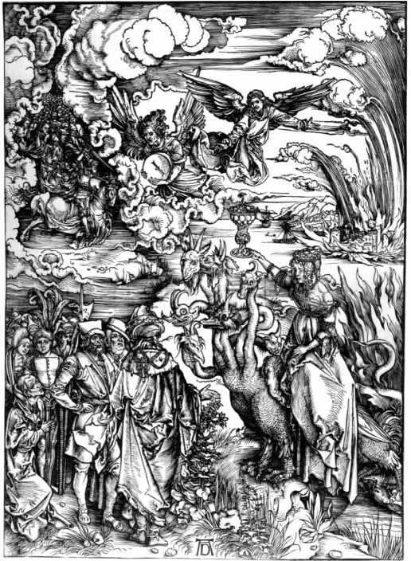

牛顿进入三一学院的时候，学院体制异常重视对神父著作的学习，当然还有对《圣经》的研习。大概是在17世纪70年代早期的某个时间，牛顿成了一个激进的反三位一体教义者。他认为传统的圣三位一体教义是一种莫名其妙、恶魔一般的腐败产物，是基督后第四个世纪中由那些曲解经文者引入的。牛顿逐渐相信，正统基督教派的创建者亚大纳西与许多僧侣、教士以及东西罗马帝国的皇帝们一道，将一些新词引进了基督教，从而败坏了基督教的教义；这些人还将捏造的经文插入《圣经》和教会教父的著作，将他们那些堕落的支持者塞满教会理事会。在牛顿看来，他们计划的核心就是这一骇人听闻的观点：基督在身体上也等同于上帝。牛顿相信上帝选择了自己来发现基督教衰落的真相，并且坚信这项工作是他将从事的最最重要的工作。
1674年末，牛顿需要得到不领圣命的特许，这表明那时他已牢固确立了异教思想。虽然像其他本科生一样，牛顿在“了解你的敌人”的原则之下，得以阅读当时反三位一体教义的著作，了解其中类似的观点。不过，若说有人鼓励牛顿接受这些信条，那几乎是根本不可能的。不过，正统基督徒视反三位一体教义的观点为可怕的异端思想，法令汇编中对那些贬低基督本性的人也有严厉的惩罚规定。终其一生，牛顿一直都在掩盖自己的宗教思想，只向两三个知名的支持者透露过。
牛顿早期的许多笔记都流露出一些反天主教的痕迹，而这对当时的剑桥学生来说是理所当然的。反对天主教教义是可以接受的，但牛顿视基督低上帝一等的思想却是不可接受的。在早期，牛顿逐渐相信经文中的大量证据表明，基督并不等同于圣父，而要低圣父一等。那些支持三位一体的经文要么是插入《圣经》中的腐败言辞，要么是对经文“牵强附会”的误读。在《圣经》的很多地方，基督——被创造的圣言或道——承认自己是低上帝一等的存在。如果基督拥有神的力量——牛顿认为基督的确拥有这些力量，那也是上帝授意的结果。上帝允许他的儿子自我贬抑，牺牲在十字架上。正是这一点使得基督值得受人崇拜，而不是作为上帝而受到崇拜。道在圣女之腹中变成肉身，基督遂成为圣子。在十字架上殉道的正是这一神圣存在，而非一个人的灵魂与神圣之道的混合体。最后，基督的复活也是借由上帝的旨意而实现的。
对牛顿而言，三位一体教义不仅难以理解，而且根本就是假的。正统基督教用晦涩难懂的形而上的论据维护三位一体教义，通过武力直接或者用异教习俗将其淡化后强加于异教徒。牛顿非常重视基督教基本教义的简明性，强调只需相信有关基督的很少的几个信条，就可获得得救的信心。这几个信条就是保罗所说的给婴儿的奶，包括：耶稣是《旧约》预言的弥赛亚；耶稣是上帝之子，在圣父面前降尊牺牲在十字架上，然后又为上帝所复活；耶稣终有一天将再临，届时会审判“活人和复活的死人”。不过，《圣经》中也有更深的真理或“给成人的肉”，以供那些经过洗礼、被纳入教会的“成年人”获知。这些知识需要经过长期的研习才能获得，但并不是基督教信仰所必需的，而且基督徒们不应参与关于这些知识的争执，以免导致教派分裂。
研习经文最重要的对象是预言，尤其是《新约》最后一本书《启示录》中的预言。在理解《启示录》所需的主要方法上，牛顿与17世纪那些最主要的新教《圣经》注释学者意见一致。像那些注释家一样，牛顿相信《启示录》中的那些比喻指的是4世纪末开始的善恶之间的一场大战。其中的关键象征和描述指的是真正的教会受到迫害的具体时期和真理的敌人横行无忌或者被正义之士征服的具体时期。的确，一些解读方法——比如牛顿在剑桥的先驱约瑟夫·梅德所做的工作——非常通行，以致牛顿认为自己所做的不过是在解经先驱们的根本“发现”上添砖加瓦。显然，牛顿至少与一个同代人（亨利·莫尔）讨论过一些解读预言的技术性问题，但并没有透露这些问题对基督教的历史有什么意义。这完全符合他一贯的谨慎做法。
几乎可以肯定的是，在1675到1685年间，牛顿写了一部阐释《启示录》的洋洋大作，提供了“诸多证据”来证明自己的见解，就像他在《原理》中用许多证据来证明自己的观点一样。一开始，牛顿就宣称自己“通过神恩”获得了理解预言式著作的知识，现在则到了透露他的证据的时候了。他有责任、有义务传授这些证据的含义，以启迪教会。这里的教会并不包括所有的基督徒，而只涉及
现在，研究经文是“这一至伟时刻的责任”。基督徒如果不能正确地辨别基督复临的征象，他们必将受到责难，这责难与当初犹太人因未能认识到耶稣就是他们的弥赛亚而受到的责难一样严厉。只有心灵纯洁的人才能明辨基督复临的征象，但做好此准备的人为数不多。牛顿称，真正的忠信者也会貌似卑劣，并会因此而被识别出来，而“世人的谴责”则是真正教会的特征。
要对《圣经》进行解读，关键是要按照一系列规则将其中的预言“条理化”。这许多规则已成了新教经文注释学的权威基础。例如，除非有特殊原因，给经文中的某一特定地名一般只应赋予一个意思。最初，这唯一的意思可能只是“字面”意思，但偶尔也可以允许一种“神秘”含义。要解读“神秘”含义，必须遵循古代解释者所遵循的解读预言式的“比喻语言”的传统。如果在缺乏这样一个基础的情况下对一段话进行神秘意义上的解读，只能导致错觉。正是这种对经文的肆意解释导致了牛顿所能想到的各种异端邪说。解释必须“自然”，必须将经文还原为最为“简明”的状态。最重要的是，预言式的异象和形象必须能够根据这些规则彼此协调一致，然后才可与历史事件相联系。《启示录》理解起来虽然比较困难，但经过正确的译解，就会对真正的教会产生举足轻重的意义。真正的宗教并不能像欧几里得几何那样为确凿的证据所证实，而且只能使少数一些人信服，但事情就应该这样。牛顿总结说，真正的宗教“能获得那些蒙选者的认同”，而这就足够了。
根据自己的计划，牛顿利用好几种不同资料列出了一个关于预言的“定义”清单。在预言“文体”中，太阳指一位国王，月球指国王手下之第一人，而星星则指王国中的伟人们。地球指地上的列国或者一国的普通大众，而海洋也指列国或一个民族。地球与海洋在一起时则指两个不同的民族。有时候，一个词会指一个以上的事物，所以一座山根据上下文可以指一座城市，也可以指一座庙宇。
列出这些定义之后，牛顿进而展示了不同的异象是怎样彼此相连的。《启示录》中的一些象征是“连续的”，即它们指的是或前或后发生的事件；其他的象征则需被视为“同步的”，即它们指的是同一时期的不同方面。不过，如前所述，要先将这些象征之间的联系展示出来，然后才可以把它们与具体事件联系起来。牛顿总结说，几乎所有的解释者都认为《启示录》中在预言开始的时候，展示给约翰看的七印指的是连续的时间。头六个印指的是大叛教发生之前的一段时期。例如，在第五个印里，有一位临盆的女人和一只等着吞噬婴儿的红色大戾龙（撒旦）。这些描述刻画了真正的教会（那位女人）未来的命运以及她的后代（那位“男孩”）将会面临的巨大危险。
第七个印揭开不久，就从大地出来一只兽。《启示录》中说这兽有两只角，可是说话像条龙。这兽迫使所有的人在他们的额头上打下一个代表兽的数字（666）的名号。《启示录》中将那些敬神者描述为十四万四千位蒙选者，他们得到了上帝的印记，被一位天使密封起来。在另一个幻象中，羔羊（基督）站在锡安山上，身边是那些蒙选者，他们额上都有上帝的名字。那条戾龙从口里喷出一股洪水（牛顿推测，这股洪水指的是腐败堕落的群众，因为经文中经常用海来表示这类人），那位受到迫害的女人（真正的教会）则试图逃到荒野，并在此过程中得到了“大地”（也就是那些敬神之人）的帮助。经过一小段时间后，大多数释经者都会转向用“吹奏七个号角”的象征来解释不久之后发生的事情。号声之后，从海里上来一只十角兽（一种比大戾龙更为可怕的新家伙），兴起了一种显赫的十角兽宗教。接着，两角兽借助假奇迹，诱使大众崇拜十角兽，由此在地球上建立了一种新的宗教。大多数新教教徒认为这里指的显然是罗马天主教的兴起。
后来，七碗上帝的震怒被倾倒在盲目拜兽的信徒身上。大多数新教释经者都认为这一描写象征着后来的新教改革运动。但是牛顿却让每一个“相应”的碗与每一个号角“同步”，接着又将这些与那七声响雷的象征协调一致。牛顿认为，之所以要加上那七声响雷，为的是让七碗、七号角与七雷声之间的“间隔”得以描绘与代表兽的数字的名号一样的秘密（666）。这样，每个在数字次序上对应的碗和号角实际上描述的是同一个时期的两个不同方面，彼此丰富了对方描画的景象。在这里，牛顿并没有将碗专门留出来当做对新教所受磨难的具体描述，这说明牛顿明确暗示，宗教改革运动几乎没有对那个兽性帝国的权力膨胀产生一丁点抑制作用。
第五个号角吹响之时，那兽的力量急剧加强，并向那位女人后裔中的“剩余者”开战。大多数新教注释家——牛顿也不例外——都认为，这里所预言的时刻实际上宣告了一段漫长时期的开始。《启示录》中那些再鲜活不过的形象就是用来描述这一时期的。这就是罪人或反对基督者统治的时期。《启示录》将反对基督者描述为假先知或两角兽，而假先知或两角兽后来便蜕变为巴比伦的淫妇。牛顿这样解释两角兽：“两角兽是一个信奉异教的基督教会国家；以此而言，两角兽就是一个十足的淫妇。我们没有理由认为《启示录》中所说的淫妇不止一个。”这段时期直到第六个印的末尾才结束，（在《启示录》中）持续了1260天。在此期间，那位身处荒野的女人为兽所逼，不得不一直待在荒野。那兽与圣徒和烈士作战，大肆杀戮圣徒和烈士，而世间的国王们却与那个淫妇通奸，并对她顶礼膜拜。

图9 巴比伦的淫妇。阿尔布雷希特·丢勒绘于1498年。
按照牛顿的理解，第六个号角（对他而言还有第六个碗）指的是离道叛教活动达到顶峰的大灾难之时。那时福音已传遍每一个国家，那些幸存下来的敬神者对上帝感恩戴德。最后一个号角和最后一个碗描述道，许多人手拿棕树枝从不同的国家赶来，上帝的羔羊给他们吃的，将他们送到生命的水源那里，而上帝则为他们擦去眼中的泪水。羔羊与他未来的妻子团圆了；在传统上，这一象征被理解为基督、圣徒与烈士重聚在一起。
牛顿和同时代的那些激进的新教徒沉迷于解读这些以及其他的预言象征。对他们而言，这些象征本身就具有意义。不过，要充分阐明这些象征的意义，仍需将其“应用”于历史事件。在列出自己的预言定义之后，牛顿接着分析了教会的历史。在分析中他交替采用“命题”或“假定”的形式，让人感觉好像一篇数学论文似的。例如，牛顿认为第五个印指的是公元4世纪初戴克里先皇帝对基督徒的迫害与杀戮。君士坦丁大帝的出现带来了下一个印，即基督教成为罗马国教的那段时期。基督教之所以会成为国教，（牛顿认为）是凭借淡化自身的教义以迎合异教徒而做到的。337年，君士坦丁去世，罗马帝国分裂为东罗马与西罗马，而（在牛顿看来）西罗马的出现对应的就是那只十角兽从海中上来。
君士坦丁的两个儿子分别成了东、西罗马的首领，但他们的宗教观念并不一致。君士坦斯倾向于认同三位一体教义或者牛顿所说的“本体同类论” [8] 。君士坦斯的弟弟（君士坦提乌斯二世）则支持阿里乌斯派主张。阿里乌斯派主张得名于坚信基督的地位要低上帝一等的阿里乌斯牧师。牛顿写道，到364年，兽的宗教受到了公开的崇拜，其形式便是崇拜偶像，例如崇拜“死人的骨头和殉教者的其他遗物”。偶像崇拜与鬼魂崇拜一道，很快就通行天下，“就像自古以来就是这般一样”。现在，魔鬼在地上肆无忌惮地耍弄牛顿所说的“他狡猾的伎俩”，用虚假的、恶魔的奇迹引诱无知的大众。按照牛顿对事件的理解，这一预言体现的就是信奉三位一体教义的罗马天主教获得了胜利，而敬神的阿里乌斯派信徒则受到了迫害。
380年，亚大纳西的三位一体论成了全罗马的官方宗教，大叛教由此大功告成。第七印的启封描述的就是这一事件。在牛顿看来，那些行将侵占有形教会、迫害敬神者的叛教者必是基督徒无疑——只不过是那种“异教的”、堕落的基督徒。牛顿认为，有人可能会狡辩说叛教者只是在外表上信仰基督教，但一个基督徒“能比其他任何类型的人更恶毒”。395年的那第一个号角的号声既与那股可怕东风的象征同时，也与第一个碗的象征同步。它讲述的是“一种恶毒而剧痛的疮”长在“那些带有兽印且崇拜兽像的人身上”。天主教会早期的一些作家无意之中给牛顿提供第一手的证据，表明那一时期的神职人员有多么堕落。神职人员的腐败堕落使得上帝安排罗马帝国东部游牧民族哥特人起而攻击他们。天主教徒血腥地迫害那些想要脱离天主教主教会的基督徒群体——牛顿认为这是再可悲不过的，但哥特人却通过一系列野蛮的事件转而攻击罗马本身，最终于410年洗劫了罗马。第二个号角与第二个碗所描述的就是这个事件。
牛顿接着声称，第三个号角与第三个碗跟那股南风恰好暗合，描述的是非洲天主教徒在汪达尔人手中遭受杀戮的事件。汪达尔人要比哥特人凶残多了。不管怎么说，哥特人虽然偶尔会有残暴的行径，但他们管理罗马的方式还算虔诚正直。牛顿从维克托的《汪达尔人迫害录》中得知了汪达尔人施加给好迫害他人的非洲天主教徒的可怕暴行。牛顿指出汪达尔人嗜杀成性，史无前例。谁不追随他们的迷信做法，他们就谋害谁，就着手实施“那些血腥的迫害，而且这些迫害一直在欧洲实行，直到今天还在天主教会中持续存在”。牛顿怀着非常激动的心情一次又一次地写道，汪达尔人连本带息地回敬了天主教徒。汪达尔人的首领根泽里克用烧红的铁板折磨修女，使许多修女变成了残废，牛顿也同意这是“非常残酷的”。不过，天主教徒是不贞洁的，成千上万的天主教徒遭受苦难是神圣正义的体现。牛顿认为其中的关键在于，汪达尔人迫害天主教徒是因为天主教徒道德败坏，而不是因为他们信仰的宗教。
对偶像与圣母马利亚的崇拜“始于”第四个号角与第四个碗的末期。那时上帝让非洲的天主教会短暂恢复，好让教会里那些傲慢而顽固的神职人员一次又一次地遭受汪达尔人的迫害。从第五个号角与第五个碗开始，“事情”出现了“新的一幕”。《启示录》这样描述道：烟从一个坑中冒出，从烟里涌出一大群蝗虫——它们在预言式的语言中指军队，这些蝗虫不得伤害各种生物，只可伤害那些额头上没有上帝的印记的人。
在第六个号角与第六个碗期间，一位天使放开了幼发拉底大河所捆的四个天使，准备让骑着狮头战马、穿着鲜艳盔甲的骑士杀死“人类的三分之一”。那些照常崇拜鬼魂和由金、银、铜、石、木造的“看不见、听不见、走不动”的偶像的人们受到了谴责，那些犯了凶杀、奸淫和偷窃等罪行却仍不悔改的人们也受到了谴责。
第六个碗描述的是幼发拉底大河干涸枯竭，从龙口、兽口和假先知的口中出来三个邪灵，状如青蛙。它们是邪魔之灵，会行奇迹。它们让诸王与异教徒为哈米吉多顿大战做好准备。
牛顿对教会历史的这个分析可谓新颖独到，惊世骇俗。在17世纪七八十年代，这一分析曾占据了牛顿的大部分心思。牛顿使用的分析技巧与同代那些激进的新教徒所采用的差不多，但是他的结果却彻底颠覆了各派正统基督徒所坚信的历史上的英雄与恶棍。实际上，就在牛顿编撰他的《原理》的时候，他同时在撰写一篇具体而详尽的评论，剖析天主教徒是如何满足第六个号角与第六个碗所描述的条件的。在此评论中，牛顿将天主教徒称为“巫师”和“术士”。鉴于最后一个号角和最后一个碗之前的许多事件尚未发生，牛顿在此也表现出了他从事哲学工作的谨慎态度，说他不愿冒险去揣测未来之事的具体性质和发生时间。相反，他认为自己的工作是对预言在历史中的应验进行观察，并在事实的基础上进行分析。在18世纪早期，牛顿将未来大事的发生时间进一步推后，认为在基督再临之前，还将有一段很长的腐败时期。